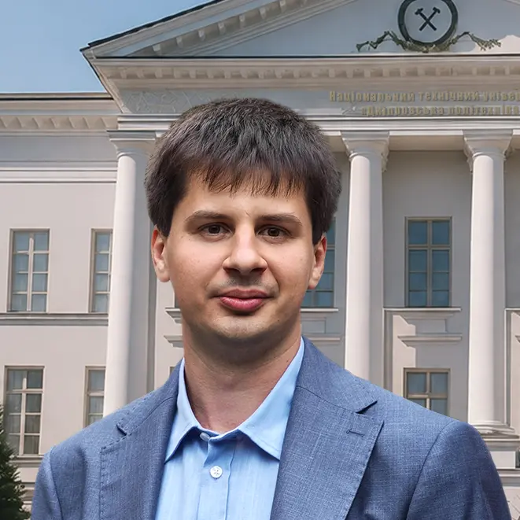

Kostiantyn Khabarlak is an Associate Professor at the Department of System Analysis and Control, Dnipro University of Technology, Ukraine. He received his PhD in Computer Science in 2023, and was awarded the academic title of Associate Professor in 2026.
He graduated with honours from Oles Honchar Dnipropetrovsk National University, Ukraine in 2017 (Bachelor's in System Analysis) and received his Master's with honours from National Technical University "Dnipro Polytechnic", Ukraine in 2019. Prior to his academic career, he spent five years as a software developer at SOLVVE, working on a commercial video processing pipeline built around computer vision algorithms.
Khabarlak is the author of more than 50 scientific and methodological works. He was awarded the Cabinet of Ministers of Ukraine Scholarship for Young Scientists for 2026-2027.
Developed and maintained a commercial video processing product built around computer vision algorithms. Responsibilities included the image processing algorithmic server module, significant performance optimization of high-load system components, and resolving critical defects in both the product and third-party libraries to improve overall stability.